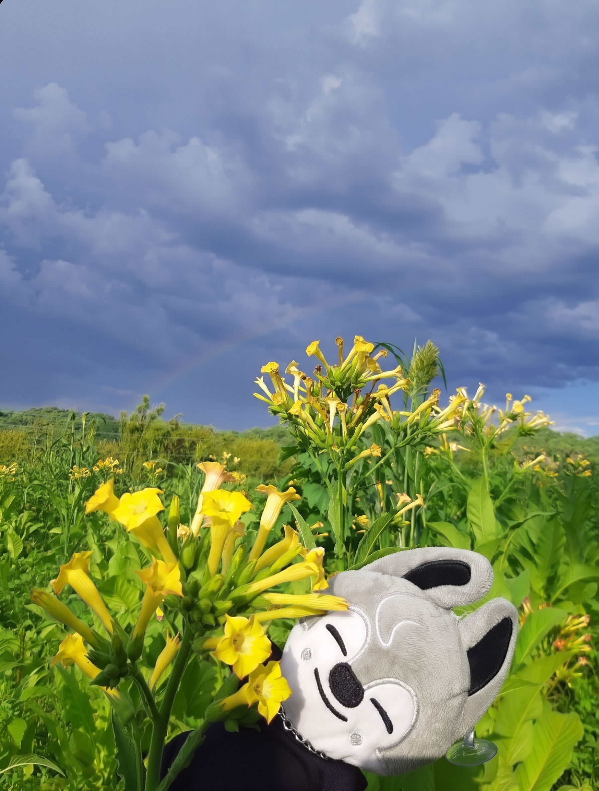
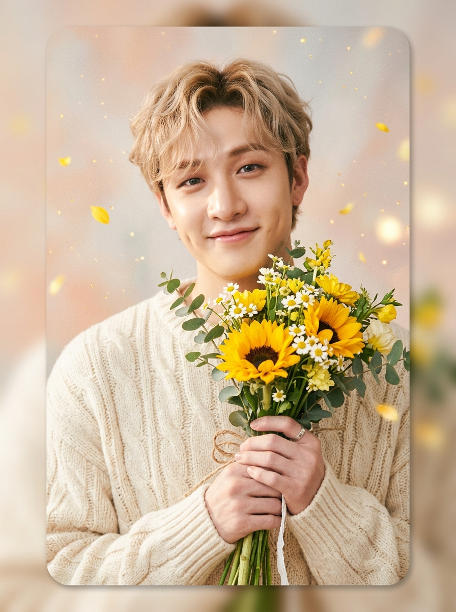

Tus Flores Amarillas
Florecen Hoy Para Ti, Bombón
Para mi bombón favorita: porque mereces flores eternas que acompañen tu talento increíble, tus outfits relajantes en tonos neutros y esa ternura tan hermosa que me derrite el corazón 🐺💛

MENSAJE DE WOLF CHAN:
🐾 0 mimos"¡Hola, bombón! Sé cuánto amas hacer arte en las uñas y armar outfits relajantes con tus colores. Bang Chan y yo sabemos que aunque seas la mayor, te pones chiquita y súper tierna cuando te trato bonito... ¡así que hoy te llenamos de flores amarillas y mimos! 🐾✨🌻"
Tu Jardín Eterno de Primavera 🌻
Haz clic o toca en cualquier parte del jardín para florecer una nueva flor amarilla. ¡Cada flor guarda un cumplido sincero y especial para ti!
Haz clic o toca en cualquier rincón para hacer florecer girasoles, margaritas y tulipanes
¡Nuevo Hito Desbloqueado!
Has llenado tu jardín de sonrisas.
Photocard 3D & Chan's Room 🎵
Tarjeta coleccionable virtual con acabado holográfico tornasolado y un reproductor de música con melodías reconfortantes para acompañar tu día.

"Hey Gabriela (Bombón)! Bang Chan here 🐺💛
Just wanted to remind you how special, talented and amazing you are. Keep creating magic with your
nail art, rocking those peaceful aesthetic outfits, and smiling bright.
Whenever you need comfort or a little safe space, Chan's room is always open for you. Hugs from
afar, Stay!"
Youtiful
Stray Kids (스트레이 키즈)
"You are beautiful just the way you are... never forget it 🌸"
Buzón de Mensaje Secreto
Toca el sello dorado de cera con la huellita de Wolf Chan para romper el lacre y revelar la carta que fue escrita especialmente para ti.
Para: Mi Bombón 💛
Toca el sello dorado para abrir tu dedicatoria
Mi bombón... Dicen que regalar flores amarillas cada 21 de septiembre es una promesa de amor bonito, de alegría sincera y de desearle lo más radiante de la vida a quien las recibe.
Admiro tanto el talento y la paciencia que tienes cuando haces uñas; ver el detalle que le pones a cada diseño es increíble. Y me fascina cómo armas tus outfits con esos colores neutros tan lindos que transmiten pura paz, calma y relajación... eres súper aesthetic y tienes una vibra que reconforta a cualquiera.
Y te confieso algo que me derrite el corazón: aunque seas mayor que yo, me da una ternura inmensa ver cómo te pones chiquita y tímida cuando te trato bonito. Es de las cosas más hermosas y dulces que tienes.
Y bueno... te tengo que ser totalmente honesto con una pequeña confesión jaja. Si no te llegaron flores reales a la puerta es porque no sabía a dónde mandar un delivery, y mandarlas a la oficina pero iba a ser demasiado sospechoso (¡no quería ponerte en aprietos ni levantar miradas raras! Jaja). Me quedé sin ideas de logística... pero me negaba por completo a que te quedaras sin tus flores amarillas hoy.
Por eso te construí este rinconcito propio: un jardín que nunca se va a marchitar, con Wolf Chan cuidando de ti y Bang Chan recordándote lo increíble que eres.
Gracias por ser esa personita super dulce y hermosa. ¡Feliz 21 de Septiembre, bombón!
PD: Quizá no soy el más experto en idols coreanos de K-Pop jeje, pero investigué con mucho cariño a Bang Chan y Wolf Chan porque sé lo mucho que te gustan y lo feliz que te hacen. Quería que tu día fuera tan especial como tú lo eres pos pa mi💛
Con todo mi cariño